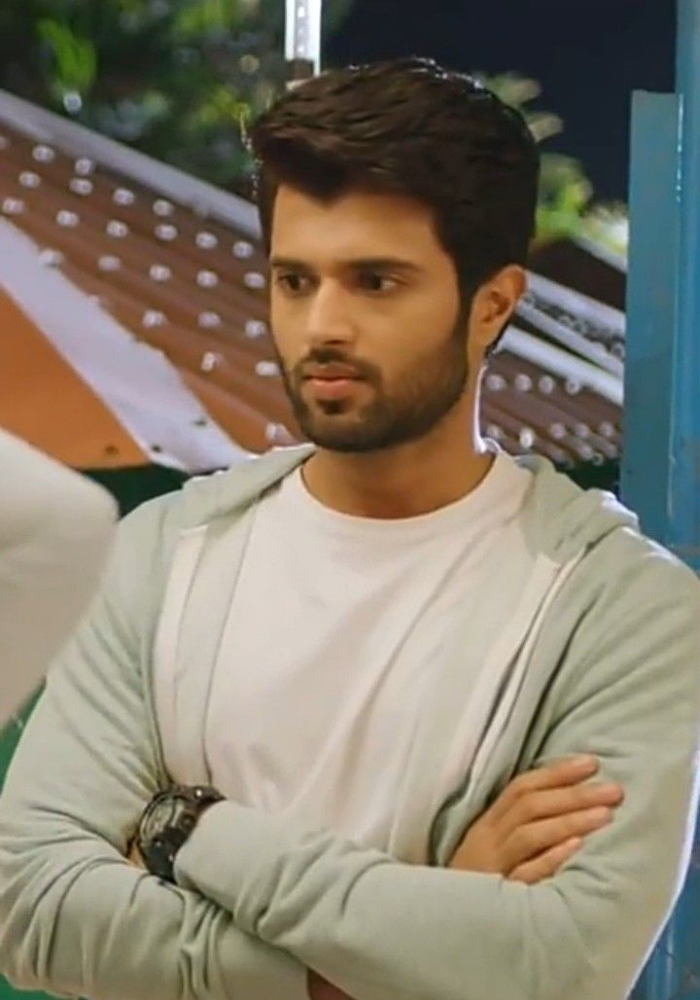
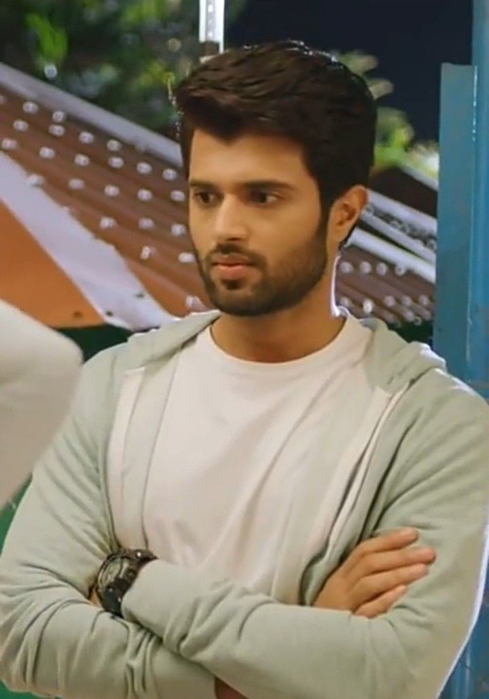

My love ❤

 

I'm a huge fan of Vijay Deverakonda, and it all began with his movie Arjun Reddy. Playing a brilliant but rebellious surgeon dealing with heartbreak, Vijay's raw and intense portrayal made the film a cult classic and turned him into a youth icon overnight. His career skyrocketed, with hits like Geetha Govindam, a romantic drama, and Taxiwaala, a blend of comedy and thriller, showcasing his versatility.
Another significant film in his career is Dear Comrade (2019), where Vijay played Bobby, a hot-headed student leader dealing with anger issues. The movie explores love, struggle, and standing up for what's right, while also addressing mental health and self-acceptance. Vijay's chemistry with Rashmika Mandanna, who played a cricketer, and the film's emotional depth made it a fan favorite, solidifying his status as a star willing to take on bold, challenging roles